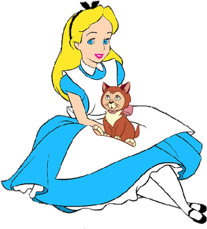
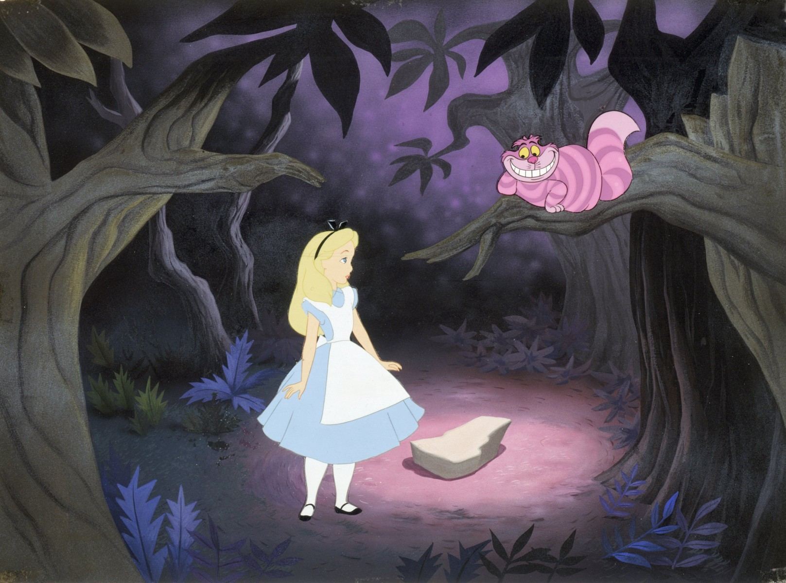
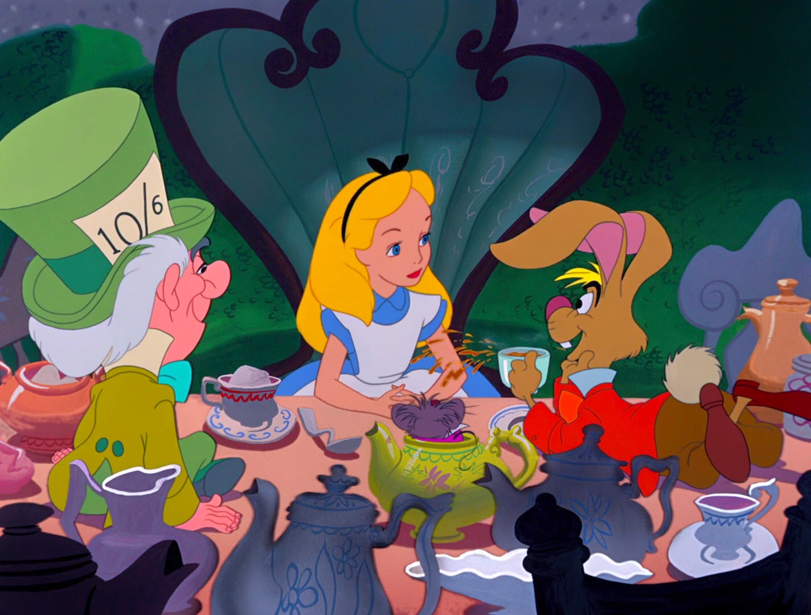

Spider-Man applauds all the Little Apple Heroes. And all the kids of NYC.
Sophie has arrived!
For Margeaux, born a few blocks from here in May 2008. We wish you the best life can bring- From Mom & Dad.
To the sunshines of my life: Lorraine, Lea, Coralie and Lucas. To the great times we have had in this city and in this park.



